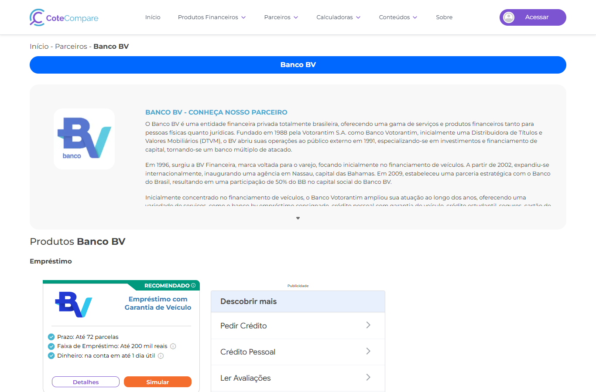
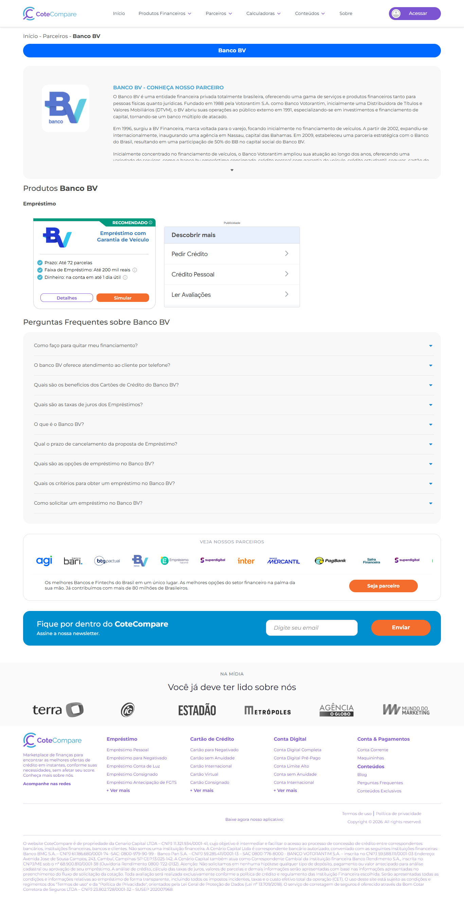

Sistema de Investigação de Marca e Identidade Online
https://cotecompare.com.br/parceiro/banco-bv
Prioridade: MEDIUM · Cenário: B_AMBIGUOUS_COMMUNICATION · Revisão humana: PENDING
Trata-se de página dedicada ao Banco BV dentro do portal comparador/correspondente CoteCompare (Cenario Capital LTDA – CNPJ 11.321.934/0001-41). Embora o rodapé identifique o CNPJ do correspondente e declare o convênio com o Banco Votorantim S.A., há pontos de atenção que exigem revisão humana à luz da Resolução CMN nº 4.935/2021: (1) uso destacado do logotipo da instituição financeira na área principal e no card de captação ('Simular' Empréstimo com Garantia de Veículo); (2) uso de 'Banco BV: Crédito e Investimentos Confiáveis' no título e em og:site_name sem menção ao correspondente; e (3) ausência de divulgação dos telefones de SAC/Ouvidoria do Banco BV no aviso do rodapé. [Revisor: CONFIRM] Confirma-se a classificação REVIEW_REQUIRED (prioridade MEDIUM). Embora o site CoteCompare identifique no rodapé a razão social e o CNPJ da correspondente bancária (Cenario Capital LTDA – CNPJ 11.321.934/0001-41) e declare convênio com o Banco Votorantim S.A., a página promove captação ativa de 'Empréstimo com Garantia de Veículo' exibindo o logotipo do Banco BV em destaque na área visível inicial, utiliza metadados e título exclusivos da marca ('Banco BV: Crédito e Investimentos Confiáveis') e omite os canais de SAC/Ouvidoria do Banco BV na declaração regulatória do rodapé, demandando verificação de conformidade com a Resolução CMN nº 4.935/2021.


| Ref | Tipo | Local | Conteúdo |
|---|---|---|---|
| E-URL | domain | url | URL final: https://cotecompare.com.br/parceiro/banco-bv (domínio: cotecompare.com.br) |
| E-COLLECT | network | collection | Status da coleta: OK; HTTP 200; ocorrências: network did not become idle (continuing) |
| E-DISC-001 | text | search_index | Índice de busca (grounding): cotecompare.com.br — **URL:** `https://cotecompare.com.br/parceiros/banco-bv/` | **Uso da Marca:** Exibe `Logo Banco BV` em destaque sob o título "BANCO BV - CONHEÇA NOSSO PARCEIRO", ofertando calculadoras financeiras próprias (Calculadora Empréstimo, Calculadora Consignado, Calculadora com Garantia) e captação para empréstimos e financiamento de veículos | **Conformidade (CNPJ / Correspondente):** Embora apresente o banco como "parceiro", não exibe de forma clara no conteúdo da página a razão social da promotora, seu CNPJ ou o aviso formal da Resolução CMN nº 4.935/2021 |
| E-SHOT-VIEWPORT | screenshot | viewport | evidence\Cb3be9f18ad\attempt-1\viewport.png (sha256 5c7b95885b19277e…) |
| E-SHOT-FULL | screenshot | page | evidence\Cb3be9f18ad\attempt-1\fullpage.png (sha256 af68a5d674e5a5ac…) |
| E-TITLE | title | head | Banco BV: Crédito e Investimentos Confiáveis |
| E-META-1 | meta | head | description: Conheça o Banco BV, referência em crédito e investimentos confiáveis. Oferece soluções financeiras que facilitam seu acesso ao crédito com segurança. |
| E-META-2 | meta | head | og:site_name: Banco BV: Crédito e Investimentos Confiáveis |
| E-META-3 | meta | head | og:title: Banco BV: Crédito e Investimentos Confiáveis |
| E-META-4 | meta | head | og:description: Conheça o Banco BV, referência em crédito e investimentos confiáveis. Oferece soluções financeiras que facilitam seu acesso ao crédito com segurança. |
| E-CANONICAL | meta | head | https://cotecompare.com.br/parceiro/banco-bv |
| E-HEAD-1 | heading | page | BANCO BV - CONHEÇA NOSSO PARCEIRO |
| E-HEAD-2 | heading | page | Quais as Modalidades de Empréstimo Disponíveis? |
| E-HEAD-3 | heading | page | Empréstimo Pessoal — Banco BV |
| E-HEAD-4 | heading | page | Empréstimo Consignado — Banco BV |
| E-HEAD-5 | heading | page | Empréstimo FGTS — Banco BV |
| E-HEAD-6 | heading | page | Empréstimo Pessoal com Garantia de Veículo — Banco BV |
| E-HEAD-7 | heading | page | Empréstimo Pessoal com Garantia de Imóvel — Banco BV |
| E-HEAD-8 | heading | page | Empréstimo BV é Confiável e Seguro? |
| E-HEAD-9 | heading | page | Banco BV no Reclame Aqui |
| E-HEAD-10 | heading | page | 3 Vantagens do Empréstimo Consignado |
| E-HEAD-11 | heading | page | Produtos Banco BV |
| E-HEAD-12 | heading | page | Empréstimo |
| E-HEAD-13 | heading | page | Perguntas Frequentes sobre Banco BV |
| E-HEAD-14 | heading | page | Como faço para quitar meu financiamento? |
| E-HEAD-15 | heading | page | O banco BV oferece atendimento ao cliente por telefone? |
| E-HDR | text | header | Início Produtos Financeiros Parceiros Calculadoras Conteúdos Sobre Acessar |
| E-FOLD | text | viewport (acima da dobra) | Início produtos financeiros parceiros calculadoras conteúdos Sobre Acessar × Início Produtos Financeiros Parceiros Calculadoras Conteúdos e Suporte Sobre Área Logada Área Logada Início - Parceiros - Banco BV Banco BV BANCO BV - CONHEÇA NOSSO PARCEIRO O Banco BV é uma entidade financeira privada totalmente brasileira, oferecendo uma gama de serviços e produtos financeiros tanto para pessoas físicas quanto jurídicas. Fundado em 1988 pela Votorantim S.A. como Banco Votorantim, inicialmente uma Distribuidora de Títulos e Valores Mobiliários (DTVM), o BV abriu suas operações ao público externo em 1991, especializando-se em investimentos e financiamento de capital, tornando-se um banco múltiplo de atacado. Em 1996, surgiu a BV Financeira, marca voltada para o varejo, focando inicialmente no financiamento de veículos. A partir de 2002, expandiu-se internacionalmente, inaugurando uma agência em Nassau, capital das Bahamas. Em 2009, estabeleceu uma parceria estratégica com o Banco do Brasil, resultando em uma participação de 50% do BB no capital social do Banco BV. Inicialmente concentrado no financiamento de veículos, o Banco Votorantim ampliou sua atuação ao longo dos anos, oferecendo uma variedade de serviços, como o banco bv empréstimo consignado, crédito pessoal com garantia de veículo, crédito estudantil, seguros, cartão de crédito e outras facilidades financeiras, visando melhorar a qualidade de vida das pessoas. Quais as Modalidades de Empréstimo Disponíveis? Empréstimo Pessoal — Banco BV Uma modalidade oferecida pela BV Financeira é o crédito pessoal, onde o banco fornece um montante ao solicitante, e ao longo dos meses, o cliente reembolsa o valor em parcelas fixas, acrescidas de juros e outros encargos. Apesar de proporcionar acesso rápido a recursos, as taxas de juros são mais elevadas devido à ausência de garantias. A aprovação envolve análise do histórico financeiro, capacidade de pagamento e eventuais restrições no CPF. O pagamento pode ser iniciado após 15 a |
| E-FTR | text | footer | NA MÍDIA Você já deve ter lido sobre nós Empréstimo Cartão de Crédito Conta Digital Conta & Pagamentos Marketplace de finanças para encontrar as melhores ofertas de crédito em instantes, conforme suas necessidades, sem afetar seu score. Conheça mais sobre nós. Acompanhe nas redes Empréstimo Pessoal Empréstimo para Negativado Empréstimo Conta de Luz Empréstimo Consignado Empréstimo Antecipação de FGTS + Ver mais Cartão para Negativado Cartão sem Anuidade Cartão Internacional Cartão Virtual Cartão Consignado + Ver mais Conta Digital Completa Conta Digital Pré-Pago Conta Limite Alto Conta sem Anuidade Conta Internacional + Ver mais Conta Corrente Maquininhas Conteúdos Blog Perguntas Frequentes Conteúdos Exclusivos Baixe agora nosso aplicativo: Termos de uso | Política de privacidade Copyright © 2026. All rights reserved. O website CoteCompare é de propriedade da Cenario Capital LTDA – CNPJ 11.321.934/0001-41, cujo objetivo é intermediar e facilitar o acesso ao processo de concessão de crédito entre correspondentes bancários, instituições financeiras, bancos e clientes. Não somos uma instituição financeira. A Cenário Capital Ltda é correspondente bancário autorizado, conveniado com as seguintes instituições financeiras: Banco BMG S.A. – CNPJ 61.186.680/0001-74 -SAC: 0800-979-90-99 - Banco Pan S.A. – CNPJ 59.285.411/0001-13 – SAC 0800-776-8000 - BANCO VOTORANTIM S.A. – inscrita no CNPJ 59.588.111/0001-03 Endereço: Avenida Jose de Sousa Campos, 243, Cambuí, Campinas-SP CEP:13.025-142. A Cenário Capital também atua como Correspondente Cambial da instituição financeira Banco Rendimento S.A., inscrita no CNPJ/ME sob o nº 68.900.810/0001-38 (Ouvidoria Rendimento 0800-722-0132). Atenção: Não solicitamos em nenhuma hipótese qualquer tipo de depósito, pagamento ou valor antecipado para análise cadastral ou aprovação de seu empréstimo. A análise de crédito, cálculo das taxas de juros, valores de parcelas e demais informações serão apresentadas com base nas informações apresentada |
| E-NAV | nav | header | <https://cotecompare.com.br/?aff_sub=cenario> | Início <https://cotecompare.com.br/?aff_sub=cenario> | Sobre <https://cotecompare.com.br/sobre?aff_sub=cenario> | Acessar <https://cotecompare.com.br/login?aff_sub=cenario> |
| E-CTA-1 | cta | header | Produtos Financeiros |
| E-CTA-2 | cta | header | Parceiros |
| E-CTA-3 | cta | header | Calculadoras |
| E-CTA-4 | cta | header | Conteúdos |
| E-CTA-5 | cta | page | × |
| E-CTA-6 | cta | page | Produtos Financeiros <https://cotecompare.com.br/parceiro/banco-bv#produtos-financeiros-6b04534b33acb> |
| E-CTA-7 | cta | page | Parceiros <https://cotecompare.com.br/parceiro/banco-bv#parceiros-6b04534b33ae8> |
| E-CTA-8 | cta | page | Calculadoras <https://cotecompare.com.br/parceiro/banco-bv#calculadoras-6b04534b33aea> |
| E-CTA-9 | cta | page | Conteúdos e Suporte <https://cotecompare.com.br/parceiro/banco-bv#conte%C3%BAdos-e-suporte-6b04534b33af5> |
| E-CTA-10 | cta | page | Área Logada <https://cotecompare.com.br/login?aff_sub=cenario> |
| E-CTA-11 | cta | page | Banco BV |
| E-CTA-12 | cta | page | Detalhes |
| E-CTA-13 | cta | page | Simular |
| E-CTA-14 | cta | page | Seja parceiro |
| E-CTA-15 | cta | page | Enviar |
| E-CTA-16 | cta | footer | + Ver mais |
| E-CTA-17 | cta | footer | + Ver mais |
| E-CTA-18 | cta | footer | + Ver mais |
| E-CONTACT-1 | contact | footer | <https://www.facebook.com/CoteCompare/> |
| E-CONTACT-2 | contact | footer | <https://www.instagram.com/cotecompare/> |
| E-IMG-1 | image | header (acima da dobra) | imagem alt='Logo CoteCompare' src=https://cotecompare.com.br/modules/files/home2/logo_cima.webp (157x40, acima da dobra) |
| E-IMG-2 | image | page (acima da dobra) | imagem alt='Logo CoteCompare' src=https://cotecompare.com.br/modules/files/home2/logo_cima.webp (157x40, acima da dobra) |
| E-IMG-3 | image | page (acima da dobra) | imagem alt='Logo Banco BV' src=https://cotecompare.com.br/public/upload/img/parceiros_paginas/logo_interno/Banco-BV_7.webp (140x140, acima da dobra) |
| E-IMG-4 | image | page (acima da dobra) | imagem alt='Logo Empréstimo com<br>Garantia de Veículo' src=https://cotecompare.com.br/public/upload/img/parceiros/Empr%C3%A9stimo-com%3Cbr%3EGarantia-de-Ve%C3%ADculo---2499.webp (100x60, acima da dobra) |
| E-IMG-5 | image | page | imagem alt='Banco BV' src=https://cotecompare.com.br/modules/files/home2/bv.webp (49x35, abaixo da dobra) |
| E-IMG-6 | image | page | imagem alt='Banco BV' src=https://cotecompare.com.br/modules/files/home2/bv.webp (49x35, abaixo da dobra) |
| E-IMG-7 | image | footer | imagem alt='logo terra' src=https://cotecompare.com.br/modules/files/home2/terra.webp (150x44, abaixo da dobra) |
| E-IMG-8 | image | footer | imagem alt='logo ig' src=https://cotecompare.com.br/modules/files/home2/ig.webp (150x44, abaixo da dobra) |
| E-IMG-9 | image | footer | imagem alt='logo estadão' src=https://cotecompare.com.br/modules/files/home2/estadao.webp (150x44, abaixo da dobra) |
| E-IMG-10 | image | footer | imagem alt='logo metropolis' src=https://cotecompare.com.br/modules/files/home2/metropolis.webp (150x44, abaixo da dobra) |
| E-IMG-11 | image | footer | imagem alt='logo globo' src=https://cotecompare.com.br/modules/files/home2/globo.webp (150x44, abaixo da dobra) |
| E-IMG-12 | image | footer | imagem alt='logo mundo do marketing' src=https://cotecompare.com.br/modules/files/home2/mundodomarketing.webp (150x44, abaixo da dobra) |
| E-IMG-13 | image | footer | imagem alt='CoteCompare' src=https://cotecompare.com.br/modules/files/stock/pattern/logo-colored.webp (172x45, abaixo da dobra) |
| E-TXT-001 | text | page | Parceiros |
| E-TXT-002 | text | page | Parceiros |
| E-TXT-003 | text | page | Início - Parceiros - Banco BV |
| E-TXT-004 | text | page | Banco BV |
| E-TXT-005 | text | page | BANCO BV - CONHEÇA NOSSO PARCEIRO |
| E-TXT-006 | text | page | O Banco BV é uma entidade financeira privada totalmente brasileira, oferecendo uma gama de serviços e produtos financeiros tanto para pessoas físicas quanto jurídicas. Fundado em 1988 pela Votorantim S.A. como Banco Votorantim, inicialmente uma Distribuidora de Títulos e Valores Mobiliários (DTVM), o BV abriu suas operações ao público externo em 1991, especializando-se em investimentos e |
| E-TXT-007 | text | page | financiamento de capital, tornando-se um banco múltiplo de atacado. |
| E-TXT-008 | text | page | Em 1996, surgiu a BV Financeira, marca voltada para o varejo, focando inicialmente no financiamento de veículos. A partir de 2002, expandiu-se internacionalmente, inaugurando uma agência em Nassau, capital das Bahamas. Em 2009, estabeleceu uma parceria estratégica com o Banco do Brasil, resultando em uma participação de 50% do BB no capital social do Banco BV. |
| E-TXT-009 | text | page | Inicialmente concentrado no financiamento de veículos, o Banco Votorantim ampliou sua atuação ao longo dos anos, oferecendo uma variedade de serviços, como o banco bv empréstimo consignado, crédito pessoal com garantia de veículo, crédito estudantil, seguros, cartão de crédito e outras facilidades financeiras, visando melhorar a qualidade de vida das pessoas. |
| E-TXT-010 | text | page | Empréstimo Pessoal — Banco BV |
| E-TXT-011 | text | page | Uma modalidade oferecida pela BV Financeira é o crédito pessoal, onde o banco fornece um montante ao solicitante, e ao longo dos meses, o cliente reembolsa o valor em parcelas fixas, acrescidas de juros e outros encargos. Apesar de proporcionar acesso rápido a recursos, as taxas de juros são mais elevadas devido à ausência de garantias. A aprovação envolve análise do histórico financeiro, |
| E-TXT-012 | text | page | O pagamento pode ser iniciado após 15 a 45 dias, com parcelamento entre 6 e 24 vezes, apresentando parcelas fixas. As opções de pagamento são variadas, permitindo ao cliente escolher a mais adequada às suas necessidades, incluindo o adiantamento de parcelas bv quando necessário. |
| E-TXT-013 | text | page | Empréstimo Consignado — Banco BV |
| E-TXT-014 | text | page | O banco bv empréstimo consignado é direcionado a categorias específicas, oferecendo as menores taxas de juros do mercado e condições excepcionais de parcelamento. Pessoas com nome negativado podem solicitar esse tipo de empréstimo. As parcelas são descontadas diretamente da folha salarial, holerite ou benefício do solicitante, não podendo exceder 35% dos ganhos mensais. |
| E-TXT-015 | text | page | Esta modalidade permite maior flexibilidade para adiantamento de parcelas BV, proporcionando ao cliente a possibilidade de quitar antecipadamente seu compromisso financeiro quando dispuser de recursos extras. |
| E-TXT-016 | text | page | Empréstimo FGTS — Banco BV |
| E-TXT-017 | text | page | O Banco BV permite a antecipação de saques-aniversário do FGTS, com taxas de juros competitivas de 1,99% ao mês. O valor é descontado diretamente do saldo FGTS, não afetando outros tipos de crédito. A antecipação pode abranger até 6 anos de parcelas do saque-aniversário, oferecendo também opções de adiantamento de parcelas BV conforme a necessidade do cliente. |
| E-TXT-018 | text | page | Empréstimo Pessoal com Garantia de Veículo — Banco BV |
| E-TXT-019 | text | page | Empréstimo Pessoal com Garantia de Imóvel — Banco BV |
| E-TXT-020 | text | page | Empréstimo BV é Confiável e Seguro? |
| E-TXT-021 | text | page | A BV Financeira é uma instituição consolidada, reconhecida pelo Banco Central, com CNPJ ativo e avaliações positivas no ReclameAqui. Não solicita depósitos antecipados e prioriza a segurança dos dados dos usuários. As taxas de juros são justas e compatíveis com os principais bancos do mercado. |
| E-TXT-022 | text | page | Banco BV no Reclame Aqui |
| E-TXT-023 | text | page | A BV Financeira, atuando por mais de 20 anos, possui uma política sólida de segurança e controle de informações. No ReclameAqui, o Banco BV respondeu à cerca de 98,66% das 30.000 reclamações recebidas desde 2019. A taxa de solução foi de 77%, e 63% dos clientes considerariam fazer negócio novamente, resultando em uma média de nota de 7,4/10 e classificação "Bom". |
| E-TXT-024 | text | page | Parcelas Fixas: Todas as modalidades de empréstimo garantem parcelas fixas ao longo do contrato, eliminando surpresas e taxas extras. O banco bv empréstimo consignado oferece essa previsibilidade essencial para o planejamento financeiro. |
| E-TXT-025 | text | page | Várias Opções de Pagamento: O Banco BV oferece diversas formas de pagamento para as parcelas do empréstimo, incluindo facilidades para adiantamento de parcelas bv, permitindo ao cliente escolher a alternativa mais conveniente para sua situação financeira. |
| E-TXT-026 | text | page | Carência para Iniciar o Pagamento: O Banco BV oferece uma carência de 15 a 45 dias para o início do pagamento da primeira parcela, proporcionando um período de organização financeira ao consumidor antes do primeiro desconto em folha. |
| E-TXT-027 | text | page | Produtos Banco BV |
| E-TXT-028 | text | page | Perguntas Frequentes sobre Banco BV |
| E-TXT-029 | text | page | Acessando o aplicativo Banco BV, é possível simular o valor para quitação do financiamento. |
| E-TXT-030 | text | page | O banco BV oferece atendimento ao cliente por telefone? |
| E-TXT-031 | text | page | Sim, oferece serviço de atendimento ao cliente por telefone, disponíveis no site. |
| E-TXT-032 | text | page | Quais são os benefícios dos Cartões de Crédito do Banco BV? |
| E-TXT-033 | text | page | As taxas de juros podem variar segundo o tipo de empréstimo e o perfil do cliente. As informações detalhadas dos produtos ou com o atendimento para informações especificas. |
| E-TXT-034 | text | page | O que é o Banco BV? |
| E-TXT-035 | text | page | É uma instituição financeira brasileira, com mais de 30 anos de mercado, que oferece uma variedade de produtos e serviços, incluindo contas, cartões de crédito, investimentos e empréstimos. |
| E-TXT-036 | text | page | Quais são as opções de empréstimo no Banco BV? |
| E-TXT-037 | text | page | O Banco BV oferece empréstimos pessoais, consignados e com garantia, cada um com condições específicas. Verifique as opções para escolher a mais adequada. |
| E-TXT-038 | text | page | Quais os critérios para obter um empréstimo no Banco BV? |
| E-TXT-039 | text | page | Como solicitar um empréstimo no Banco BV? |
| E-TXT-040 | text | page | VEJA NOSSOS PARCEIROS |
| E-TXT-041 | text | page | Os melhores Bancos e Fintechs do Brasil em um único lugar. As melhores opções do setor financeiro na palma da sua mão. Já contribuímos com mais de 80 milhões de Brasileiros. |
| E-TXT-042 | text | page | Seja parceiro |
| E-TXT-043 | text | page | O website CoteCompare é de propriedade da Cenario Capital LTDA – CNPJ 11.321.934/0001-41, cujo objetivo é intermediar e facilitar o acesso ao processo de concessão de crédito entre correspondentes bancários, instituições financeiras, bancos e clientes. Não somos uma instituição financeira. A Cenário Capital Ltda é correspondente bancário autorizado, conveniado com as seguintes instituições |
| E-TXT-044 | text | page | financeiras: Banco BMG S.A. – CNPJ 61.186.680/0001-74 -SAC: 0800-979-90-99 - Banco Pan S.A. – CNPJ 59.285.411/0001-13 – SAC 0800-776-8000 - BANCO VOTORANTIM S.A. – inscrita no CNPJ 59.588.111/0001-03 Endereço: Avenida Jose de Sousa Campos, 243, Cambuí, Campinas-SP CEP:13.025-142. A Cenário Capital também atua como Correspondente Cambial da instituição financeira Banco Rendimento S.A., inscrita no |
| E-TXT-045 | text | page | CNPJ/ME sob o nº 68.900.810/0001-38 (Ouvidoria Rendimento 0800-722-0132). Atenção: Não solicitamos em nenhuma hipótese qualquer tipo de depósito, pagamento ou valor antecipado para análise cadastral ou aprovação de seu empréstimo. A análise de crédito, cálculo das taxas de juros, valores de parcelas e demais informações serão apresentadas com base nas informações apresentadas no preenchimento do |
| E-TXT-046 | text | page | fluxo de solicitação da cotação. Toda avaliação será realizada exclusivamente conforme a política de crédito e regulamento das Instituição Financeira escolhida. Serão apresentadas todas as condições e informações relativas ao empréstimo de forma transparente, incluindo todos os impostos incidentes, taxas e o custo efetivo total da operação (CET). O uso deste site está sujeito as condições e |
| E-TXT-047 | text | page | regimentos dos "Termos de uso" e da "Política de Privacidade", orientados pela Lei Geral de Proteção de Dados (Lei nº 13.709/2018). O serviço de corretagem de seguros é oferecido através da Bom Cotar Corretora de Seguros LTDA – CNPJ 23.802.728/0001-32 – SUSEP 202007968 |
| Dimensão | Sinal | Achado | Refs |
|---|---|---|---|
| VISUAL_IDENTITY | NEUTRAL | A página apresenta o cabeçalho e o layout próprios do portal CoteCompare, mas dedica a seção principal da página exclusivamente à marca e às cores do Banco BV. | E-IMG-1 E-SHOT-VIEWPORT E-SHOT-FULL |
| DECLARED_COMMERCIAL_IDENTITY | LEGITIMATE | No rodapé, o site identifica a razão social proprietária (Cenario Capital LTDA – CNPJ 11.321.934/0001-41) e sua atuação como marketplace de crédito e correspondente bancário. | E-FTR E-TXT-043 |
| CORRESPONDENT_TRANSPARENCY | CONFUSION | O aviso de correspondente bancário consta apenas no rodapé distante da área de simulação e, ao listar o convênio com o Banco Votorantim S.A. (CNPJ 59.588.111/0001-03), não exibe os canais de SAC e Ouvidoria da instituição contratante. | E-FTR E-TXT-044 E-SHOT-FULL |
| INSTITUTIONAL_LANGUAGE | CONFUSION | O elemento title e a propriedade og:site_name intitulam a página apenas como 'Banco BV: Crédito e Investimentos Confiáveis', enquanto o H1 apresenta o banco como 'nosso parceiro'. | E-TITLE E-META-2 E-HEAD-1 |
| LOGO_USAGE | CONFUSION | Uso proeminente do logotipo do Banco BV acima da dobra e junto ao botão 'Simular' para captação de Empréstimo com Garantia de Veículo, o que demanda verificação à luz do art. 14, II, da Resolução CMN nº 4.935/2021. | E-IMG-3 E-IMG-4 E-CTA-13 E-SHOT-VIEWPORT |
| SERVICE_JOURNEY | CONFUSION | A página oferta diretamente a simulação de produto do Banco BV ('Empréstimo com Garantia de Veículo' - botão 'Simular') sem exibir aviso visível de correspondente bancário próximo ao componente de captação. | E-CTA-13 E-SHOT-VIEWPORT |
| CONTACT_CHANNELS | NEUTRAL | Os links de redes sociais apontam para os perfis próprios do CoteCompare, mas faltam os telefones de SAC/Ouvidoria do Banco BV na listagem de instituições conveniadas no rodapé. | E-CONTACT-1 E-CONTACT-2 E-FTR |
| CONSUMER_CONFUSION | CONFUSION | O título nos mecanismos de busca ('Banco BV: Crédito e Investimentos Confiáveis') e o destaque visual do logotipo do banco no card de simulação podem levar o consumidor a acreditar que se trata de um canal endossado ou oficial antes de rolar até o rodapé. | E-TITLE E-META-2 E-SHOT-VIEWPORT |
Trata-se de página dedicada ao Banco BV dentro do portal comparador/correspondente CoteCompare (Cenario Capital LTDA – CNPJ 11.321.934/0001-41). Embora o rodapé identifique o CNPJ do correspondente e declare o convênio com o Banco Votorantim S.A., há pontos de atenção que exigem revisão humana à luz da Resolução CMN nº 4.935/2021: (1) uso destacado do logotipo da instituição financeira na área principal e no card de captação ('Simular' Empréstimo com Garantia de Veículo); (2) uso de 'Banco BV: Crédito e Investimentos Confiáveis' no título e em og:site_name sem menção ao correspondente; e (3) ausência de divulgação dos telefones de SAC/Ouvidoria do Banco BV no aviso do rodapé.
A página declara atuação como correspondente/prestador e identifica a empresa, mas não houve confirmação em cadastro autorizado.
| Tipo | Valor | Ref | Contexto |
|---|---|---|---|
| domain | cotecompare.com.br | E-URL | |
| cnpj | 11.321.934/0001-41 | E-FTR | rivacidade Copyright © 2026. All rights reserved. O website CoteCompare é de propriedade da Cenario Capital LTDA – CNPJ 11.321.934/0001-41 |
| cnpj | 61.186.680/0001-74 | E-FTR | Ltda é correspondente bancário autorizado, conveniado com as seguintes instituições financeiras: Banco BMG S.A. – CNPJ 61.186.680/0001-74 |
| cnpj | 59.285.411/0001-13 | E-FTR | -SAC: 0800-979-90-99 - Banco Pan S.A. – CNPJ 59.285.411/0001-13 |
| cnpj | 59.588.111/0001-03 | E-FTR | – SAC 0800-776-8000 - BANCO VOTORANTIM S.A. – inscrita no CNPJ 59.588.111/0001-03 |
| cnpj | 68.900.810/0001-38 | E-FTR | l também atua como Correspondente Cambial da instituição financeira Banco Rendimento S.A., inscrita no CNPJ/ME sob o nº 68.900.810/0001-38 |
| cnpj | 23.802.728/0001-32 | E-TXT-047 | i nº 13.709/2018). O serviço de corretagem de seguros é oferecido através da Bom Cotar Corretora de Seguros LTDA – CNPJ 23.802.728/0001-32 |
| legal_name | Votorantim S.A | E-FOLD | |
| legal_name | Cenario Capital LTDA | E-FTR | |
| legal_name | A Cenário Capital Ltda | E-FTR | |
| institution_name_displayed | BANCO VOTORANTIM S.A | E-FTR | |
| social_profile | https://www.facebook.com/CoteCompare/ | E-CONTACT-1 | |
| social_profile | https://www.instagram.com/cotecompare/ | E-CONTACT-2 | |
| legal_name | Bom Cotar Corretora de Seguros LTDA | E-TXT-047 | |
| institution_name_displayed | Banco BV: Crédito e Investimentos Confiáveis | E-META-2 | |
| phone | 0800-776-8000 | E-FTR | |
| phone | 0800-722-0132 | E-FTR | |
| correspondent_declaration | Não somos uma instituição financeira | E-FTR | NA MÍDIA Você já deve ter lido sobre nós Empréstimo Cartão de Crédito Conta Digital Conta & Pagamentos Marketplace de finanças para encontrar as melhores ofertas de crédito em instantes, conforme suas |
| correspondent_declaration | correspondente bancário autorizado | E-FTR | NA MÍDIA Você já deve ter lido sobre nós Empréstimo Cartão de Crédito Conta Digital Conta & Pagamentos Marketplace de finanças para encontrar as melhores ofertas de crédito em instantes, conforme suas |
| partnership_declaration | parceiros | E-DISC-001 | **URL:** `https://cotecompare.com.br/parceiros/banco-bv/` |
| partnership_declaration | parceiro | E-CANONICAL | https://cotecompare.com.br/parceiro/banco-bv |
| partnership_declaration | parceria | E-FOLD | Em 2009, estabeleceu uma parceria estratégica com o Banco do Brasil, resultando em uma participação de 50% do BB no capital social do Banco BV. |
Mapeamento indicativo para apoio à auditoria. Não constitui conclusão regulatória; a decisão definitiva pertence à auditoria.
Fonte: NORMATIVE
Art. 14. O contrato de correspondente deve estabelecer: [...] II - vedação à utilização, pelo contratado, de logomarca ou de outros atributos que sejam similares aos adotados pela instituição contratante em suas agências, postos de atendimento, sítio eletrônico na internet, aplicativo ou outras plataformas de comunicação em rede;
Hipótese: Uso de logomarca ou de atributos similares aos adotados pela contratante em seus canais. Aplicável somente se confirmado o vínculo de correspondente.
Evidência observada: E-CTA-13 E-IMG-3 E-IMG-4 E-SHOT-FULL E-SHOT-VIEWPORT
Informação faltante:
Fonte: NORMATIVE
Art. 14. O contrato de correspondente deve estabelecer: [...] III - divulgação ao público, pelo contratado, de sua condição de prestador de serviços à instituição contratante, identificada pelo nome com que é conhecida no mercado, com descrição dos produtos e serviços oferecidos e canais de contato da instituição contratante, inclusive de sua ouvidoria, em local visível, em destaque e em formato legível, por meio de: a) sítio eletrônico do correspondente na internet, acessível na página inicial; b) aplicativo e outras plataformas de comunicação em rede do correspondente; [...]
Hipótese: Divulgação ao público da condição de prestador de serviços à contratante ausente, insuficiente ou sem destaque. Aplicável somente se confirmado o vínculo de correspondente.
Evidência observada: E-FTR E-HEAD-1 E-META-1 E-META-2 E-META-3 E-SHOT-FULL E-SHOT-VIEWPORT E-TITLE E-TXT-043 E-TXT-044
Informação faltante:
Fonte: NORMATIVE
Art. 3º O correspondente atua por conta e sob as diretrizes da instituição contratante, que assume inteira responsabilidade pelo atendimento prestado aos clientes e usuários por meio do contratado.
Hipótese: Atendimento ao público prestado por meio do contratado em condições que podem não seguir as diretrizes da contratante. Aplicável somente se confirmado o vínculo de correspondente.
Evidência observada: E-CTA-13 E-SHOT-VIEWPORT
Informação faltante:
Limitações: requisitos contratuais/internos não fornecidos: mapeamento limitado ao texto normativo
Decisão: CONFIRM → REVIEW_REQUIRED / MEDIUM
Confirma-se a classificação REVIEW_REQUIRED (prioridade MEDIUM). Embora o site CoteCompare identifique no rodapé a razão social e o CNPJ da correspondente bancária (Cenario Capital LTDA – CNPJ 11.321.934/0001-41) e declare convênio com o Banco Votorantim S.A., a página promove captação ativa de 'Empréstimo com Garantia de Veículo' exibindo o logotipo do Banco BV em destaque na área visível inicial, utiliza metadados e título exclusivos da marca ('Banco BV: Crédito e Investimentos Confiáveis') e omite os canais de SAC/Ouvidoria do Banco BV na declaração regulatória do rodapé, demandando verificação de conformidade com a Resolução CMN nº 4.935/2021.
| Tema | Severidade | Questionamento | Refs |
|---|---|---|---|
| Transparência de Correspondente Bancário e Oferta de Crédito | MEDIUM | A página pertence a uma promotora/correspondente bancário (Cenario Capital LTDA - CNPJ 11.321.934/0001-41) que utiliza o logotipo do Banco BV em destaque na dobra inicial para captar propostas de 'Empréstimo com Garantia de Veículo' ('Simular'), mas relega a identificação de correspondente ao rodapé em fonte reduzida e omite os telefones de SAC e Ouvidoria do Banco BV (informados apenas para outras instituições conveniadas). | E-SHOT-VIEWPORT E-SHOT-FULL E-IMG-3 E-IMG-4 E-CTA-13 E-FTR E-TXT-043 E-TXT-044 |
| contradictory_evidence | LOW | Coexistem declaração de correspondente e indícios de confusão. | E-FTR E-TXT-043 |
| Fonte | Consulta / hipótese | URL original | Título / trecho |
|---|---|---|---|
| grounding | Objetivo: Páginas de financiamento que expõem arquivos de logotipo da marca.
Execute no Google Search as seguintes consultas (dorks):
- (inurl:logo-bv OR "logo-bv" OR "logo-bv-financeira") (financiamento OR veículos) -site:bv.com.br -site:bancobv.com.br -site:bvfinanceira.com.br -site:bvinvestimentos.com.br -site:napista.com.br -site:bvopen.com.br -site:meufinanciamentosolar.com.br -site:votorantim.com.br -site:vam.com.br -site:reclameaqui.com.br -site:jusbrasil.com.br -site:jus.br -site:weebly.com -site:site123.me
- ("Logo Banco BV" OR "Logo bv financeira" OR "logo BV") financiamento veículos -site:brandsoftheworld.com -site:logospng.org -site:bv.com.br -site:bancobv.com.br -site:bvfinanceira.com.br -site:bvinvestimentos.com.br -site:napista.com.br -site:bvopen.com.br -site:meufinanciamentosolar.com.br -site:votorantim.com.br -site:vam.com.br -site:reclameaqui.com.br -site:jusbrasil.com.br -site:jus.br -site:weebly.com -site:site123.me
Liste de forma abrangente as páginas públicas encontradas (até 12 resultados distintos), informando para cada uma o nome do estabelecimento/perfil, a URL e como a marca é utilizada (destaque visual, título, feirão, simulador, redes sociais e se há ou não identificação clara de CNPJ e condição de correspondente bancário). H1-identity:logo-assets | https://cotecompare.com.br/parceiro/banco-bv | cotecompare.com.br **URL:** `https://cotecompare.com.br/parceiros/banco-bv/` | **Uso da Marca:** Exibe `Logo Banco BV` em destaque sob o título "BANCO BV - CONHEÇA NOSSO PARCEIRO", ofertando calculadoras financeiras próprias (Calculadora Empréstimo, Calculadora Consignado, Calculadora com Garantia) e captação para empréstimos e financiamento de veículos | **Conformidade (CNPJ / Correspondente):** Embora apresente o banco como "parceiro", não exibe de forma clara no conteúdo da página a razão social da promotora, seu CNPJ ou o aviso formal da Resolução CMN nº 4.935/2021 |
Original: https://cotecompare.com.br/parceiro/banco-bv
Final: https://cotecompare.com.br/parceiro/banco-bv
| Artefato | Caminho | SHA-256 | Bytes |
|---|---|---|---|
| screenshot_viewport | evidence\Cb3be9f18ad\attempt-1\viewport.png | 5c7b95885b19277ebf312669e5cb2503fb4b0bb550cf34b1188eab8f6d297c7f | 136088 |
| screenshot_full | evidence\Cb3be9f18ad\attempt-1\fullpage.png | af68a5d674e5a5ac7b08df67a83e50e84525fdc4904bb5dfbc3574ab31255cf3 | 402523 |
| html | evidence\Cb3be9f18ad\attempt-1\page.html.txt | e45b471777793716238cf92231573b3023ae0ff0e088a0958813d81a8de10443 | 596915 |
| text | evidence\Cb3be9f18ad\attempt-1\text.txt | 2fc6d61b5b6df372671ba599d1d64a39ebc281039439bb0b84863352b1a0cde3 | 11070 |
| page_data | evidence\Cb3be9f18ad\attempt-1\page.json | b3e9decc7dfdab6d4c55bf6f2e6f063cc3a5fb5c7024ab0dc7d2c371c7d1daac | 51511 |
| Quando | De | Para | Nota |
|---|---|---|---|
| 2026-11-23T14:17:58+00:00 | DISCOVERED | QUEUED | prioritised (score 1.0) |
| 2026-11-23T14:52:58+00:00 | QUEUED | COLLECTING | |
| 2026-11-23T14:53:12+00:00 | COLLECTING | COLLECTED | |
| 2026-11-23T14:53:12+00:00 | COLLECTED | ANALYZING | |
| 2026-11-23T14:54:07+00:00 | ANALYZING | REVIEWING | |
| 2026-11-23T14:54:24+00:00 | REVIEWING | COMPLETED |